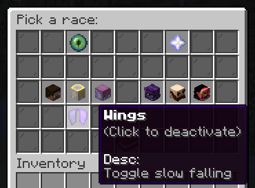

| Title | Last Updated | Language | LoC | |
|---|---|---|---|---|
| Portfolio | Sep 10, 2024 | HTML/CSS/JS | 400? | |
|
This website! It is the first assignment for my COMP 4610 GUI Programming course. Here you can view informative reading about some of the work I've done. It features different headings, working links, tables, and images. |
||||
| Secure Drop | Apr 28, 2024 | Python | 727 | |
|
Secure Drop is a file transfer program that utilizes a client-server model with a focus on confidentiality, integrity, and availability. Users are able to register and add contacts within a local network to communicate with. User data is hashed using SHA-512 algorithm and checked for integrity upon each new session. AES Symmetric and PKCS1_OAEP Asymmetric encryption is used along with PKCS1_PSS signature scheme to provide secure data transfer between contacts. |
||||
| Races | Apr 01, 2024 | Java | 2.2k | |
|
Races is a Spigot plugin that aims to overhaul vanilla Minecraft with RPG elements. Players can choose between different races such as humans, dwarfs, angels, and more to gain passive abilities such as night vision, absorption, fast digging, slow falling, etc. It also comes with a token economy system that players can utilize to switch between races. The plugin is fully customizable using in-game commands or through the configuration file that is generated upon initialization of the plugin on the server.

|
||||
| Gamba | Sep 03, 2022 | JavaScript | 520 | |
|
Gamba is a Discord bot that handles predictions. Admins are able to setup a scenario question with a 'yes' or 'no' outcome for the users to vote on. Users can bet coins on an outcome by reacting to the prediction post with emojis that correlate with their prediction. |
||||
| Art Portfolio | Aug 27, 2022 | HTML/CSS/JS | 1.7k | |
|
My first website project showcasing my mom's art. Features a side bar, horizontal scrollbar, scroll animations, and more. |
||||
| New Build | Jan 22, 2018 | Java | 8.5k | |
|
New build is a 'guess the build' mini-game for Minecraft Spigot servers. A player is chosen at random and is tasked to build something resembling a given word. Points are awarded to the builder and the guessers who are able to correctly identify the word. The game ends after all rounds have concluded and the player with the most points is crowned as the winner. Winners are given tokens that can be redeemed for cosmetic effects within the mini-game. |
||||
| Missions | Jan 07, 2018 | Java | 9.1k | |
|
Missions is a Spigot plugin that introduces story based levels with a focus on custom monsters and boss type enemies. Players are tasked to defeat an evil scientist that has gone mad. During this journey, the players will face a variety of puzzles while making their way up the scientist's tower. Once atop, players must find a way to penetrate the invincible shield guarding the scientist who will rain missiles upon them. |
||||
| Elimination | Dec 03, 2017 | Java | 6.0k | |
|
Elimination is a PvP mini-game designed for Minecraft servers using Spigot. Two teams of three players fight against one another in an arena to win five rounds in total. Players that are eliminated in a given round are able to be revived by their teammates upon crouching at the location of their death without being interrupted. A round is concluded upon the death of an entire team or at the end of the timer, whichever comes first. If the round is ended in result of the timer, the team with the most members alive is awarded the round win. |
||||